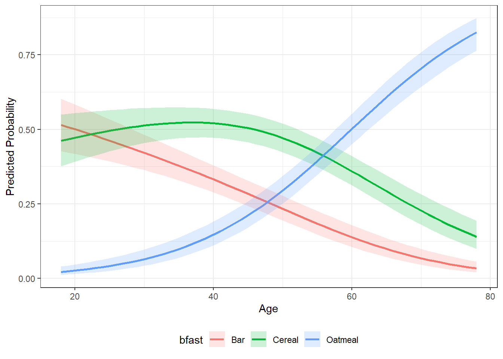
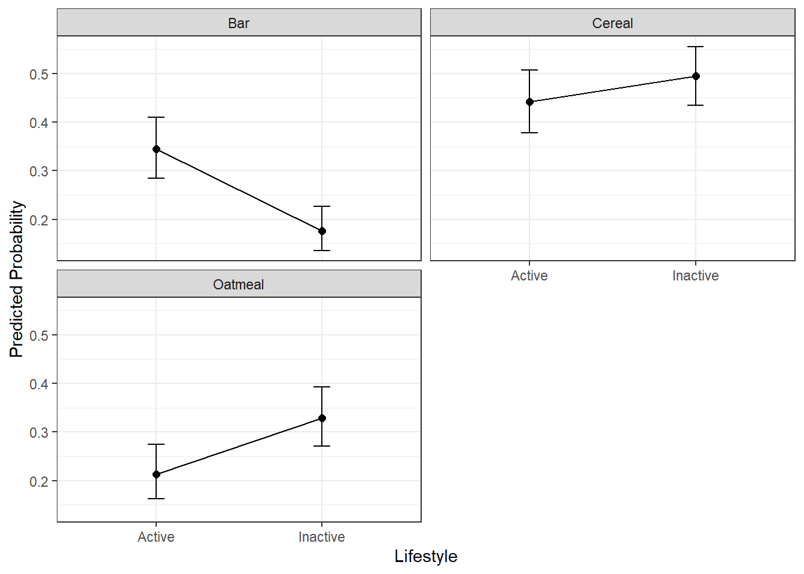

Chapter 13 Standard Multinomial Logit Models
13.1 Introduction to Multinomial Choice in Marketing
Many marketing decisions involve choices among more than two discrete alternatives. Consumers may choose among competing brands, subscription plans, service providers, or product variants. When the outcome variable has more than two unordered categories, linear regression and binary logistic regression are no longer appropriate.
The standard multinomial logit (MNL) model is the most common baseline model for analyzing and predicting such outcomes. In marketing analytics, it is widely used for brand choice, product selection, and competitive response analysis. The focus of this chapter is on applied interpretation rather than mathematical derivation.
13.2 The bfast Dataset
In this chapter, we use the bfast dataset, which contains data on
breakfast food preferences. Each observation represents a consumer choice
occasion in which one type of food was selected from a competitive set.
The outcome variable records the chosen type, while predictor variables capture marketing mix and consumer characteristics that may influence choice. Our core marketing question is: Which factors increase or decrease the probability that a consumer chooses a particular fast-food brand?
13.3 Training and Test Samples
To evaluate predictive performance, we split the data into training and
test samples. As with binary logistic regression, we use the splitsample() function from the MKT4320BGSU package. This function creates reproducible partitions and supports stratification on the outcome variable.
Usage:
splitsample(data, outcome = NULL, group = NULL, choice = NULL, alt = NULL,
p = 0.75, seed = 4320)- where:
datais the data frame to split.outcomeis the outcome variable in quotes used for stratification. Required when group isNULL. Optional when group is provided. For standard MNL, it is required.groupis NOT USED FOR STANDARD MNLchoiceis NOT USED FOR STANDARD MNLaltis NOT USED FOR STANDARD MNLpis the proportion of observations to place in the training set. Must be strictly between 0 and 1. Default is 0.75.seedis the random seed for reproducibility. Default is 4320.
Below, we create are training and test samples. We also check the outcome variable in the two samples to ensure they are similar proportions in each.
sp <- splitsample(data = bfast, outcome = "bfast")
train <- sp$train
test <- sp$test
proportions(table(train$bfast))
Cereal Bar Oatmeal
0.3851964 0.2628399 0.3519637
Cereal Bar Oatmeal
0.3853211 0.2614679 0.3532110 13.4 Estimating a Standard Multinomial Logit Model
We estimate the standard multinomial logit model using
nnet::multinom(). It is important to include model = TRUE so that
model diagnostics and classification results can be computed later.
Using the summary() function in base R will provide the raw coefficients from the model. The estimated coefficients describe how each predictor affects the relative log-odds of choosing one product versus the reference product.
library(nnet)
mnl_fit <- multinom(bfast ~ gender + marital + lifestyle + age,
model = TRUE, data=train)# weights: 18 (10 variable)
initial value 727.281335
iter 10 value 579.014122
final value 574.997631
convergedCall:
multinom(formula = bfast ~ gender + marital + lifestyle + age,
data = train, model = TRUE)
Coefficients:
(Intercept) genderMale maritalUnmarried lifestyleInactive age
Bar 0.8832457 -0.21298963 0.6126977 -0.7865772 -0.02532866
Oatmeal -4.4920408 -0.02262325 -0.3897362 0.3187473 0.07996475
Std. Errors:
(Intercept) genderMale maritalUnmarried lifestyleInactive age
Bar 0.3256994 0.2064320 0.2123832 0.2090460 0.006655803
Oatmeal 0.4596750 0.2094666 0.2366511 0.2156992 0.007755708
Residual Deviance: 1149.995
AIC: 1169.995 13.5 Evaluating Model Fit
Raw coefficients alone do not indicate whether a model performs well.
We use eval_std_mnl() from the MKT4320BGSU package to compute model-fit statistics and diagnostics.
Usage:
eval_std_mnl(OBJ, exp = FALSE, digits = 4, ft = FALSE, newdata = NULL,
label_model = "Model data", label_newdata = "New data", class_digits = 3)- where:
modelis a fittedmultinommodel.expis logical; if TRUE, return relative risk ratios (exp(beta)). If FALSE, return log-odds coefficients (default = FALSE).digitsis an integer; number of decimals used to round coefficient and model-fit results (default = 4).ftis logical; if TRUE, return coefficient and classification tables as flextable objects (default = FALSE).newdatais an optional data frame for an additional classification matrix (e.g., a holdout or test set). If NULL, only the model-data classification is produced.label_modelis a character string; label for the model-data classification output (default = “Model data”).label_newdatais a character string; label for the newdata classification output (default = “New data”).class_digitsis an integer; number of decimals used to round classification statistics (default = 3).
Key outputs include:
- A likelihood-ratio test comparing the fitted model to an intercept-only model
- McFadden’s pseudo R-squared
- Classification accuracy and diagnostics
In applied marketing contexts, even modest pseudo R-squared values can indicate meaningful improvements over random choice.
LR chi2 (8) = 288.1568; p < 0.0001 | |||||
|---|---|---|---|---|---|
McFadden's Pseudo R-square = 0.2004 | |||||
y.level | term | logodds | std.error | statistic | p.value |
Bar | (Intercept) | 0.8832 | 0.3257 | 2.7118 | 0.0067 |
Bar | genderMale | -0.2130 | 0.2064 | -1.0318 | 0.3022 |
Bar | maritalUnmarried | 0.6127 | 0.2124 | 2.8849 | 0.0039 |
Bar | lifestyleInactive | -0.7866 | 0.2090 | -3.7627 | 0.0002 |
Bar | age | -0.0253 | 0.0067 | -3.8055 | 0.0001 |
Oatmeal | (Intercept) | -4.4920 | 0.4597 | -9.7722 | 0.0000 |
Oatmeal | genderMale | -0.0226 | 0.2095 | -0.1080 | 0.9140 |
Oatmeal | maritalUnmarried | -0.3897 | 0.2367 | -1.6469 | 0.0996 |
Oatmeal | lifestyleInactive | 0.3187 | 0.2157 | 1.4777 | 0.1395 |
Oatmeal | age | 0.0800 | 0.0078 | 10.3104 | 0.0000 |
Classification Matrix - Model data | ||||
|---|---|---|---|---|
Accuracy = 0.562 | ||||
PCC = 0.341 | ||||
Reference | ||||
Predicted | Cereal | Bar | Oatmeal | Total |
Cereal | 124 | 85 | 46 | 255 |
Bar | 52 | 68 | 7 | 127 |
Oatmeal | 79 | 21 | 180 | 280 |
Total | 255 | 174 | 233 | 662 |
Statistics by Class: | ||||
Sensitivity | 0.486 | 0.391 | 0.773 | |
Specificity | 0.678 | 0.879 | 0.767 | |
Precision | 0.486 | 0.535 | 0.643 | |
Classification Matrix - New data | ||||
|---|---|---|---|---|
Accuracy = 0.583 | ||||
PCC = 0.342 | ||||
Reference | ||||
Predicted | Cereal | Bar | Oatmeal | Total |
Cereal | 45 | 24 | 20 | 89 |
Bar | 18 | 25 | 0 | 43 |
Oatmeal | 21 | 8 | 57 | 86 |
Total | 84 | 57 | 77 | 218 |
Statistics by Class: | ||||
Sensitivity | 0.536 | 0.439 | 0.740 | |
Specificity | 0.672 | 0.888 | 0.794 | |
Precision | 0.506 | 0.581 | 0.663 | |
13.5.1 Interpreting Coefficients
Coefficient estimates in a standard MNL model are interpreted relative to the reference brand. A positive coefficient means that higher values of the predictor increase the likelihood of choosing that brand relative to the baseline.
To aid interpretation, coefficients can also be expressed as relative risk ratios (RRRs). RRRs greater than 1 indicate increased relative likelihood, while values below 1 indicate decreased likelihood. These interpretations are often more intuitive for managerial audiences.
mnl_eval_rrr <- eval_std_mnl(model = mnl_fit, exp = TRUE,
newdata = test, ft=TRUE)
mnl_eval_rrr$coef_tableLR chi2 (8) = 288.1568; p < 0.0001 | |||||
|---|---|---|---|---|---|
McFadden's Pseudo R-square = 0.2004 | |||||
y.level | term | RRR | std.error | statistic | p.value |
Bar | (Intercept) | 2.4187 | 0.3257 | 2.7118 | 0.0067 |
Bar | genderMale | 0.8082 | 0.2064 | -1.0318 | 0.3022 |
Bar | maritalUnmarried | 1.8454 | 0.2124 | 2.8849 | 0.0039 |
Bar | lifestyleInactive | 0.4554 | 0.2090 | -3.7627 | 0.0002 |
Bar | age | 0.9750 | 0.0067 | -3.8055 | 0.0001 |
Oatmeal | (Intercept) | 0.0112 | 0.4597 | -9.7722 | 0.0000 |
Oatmeal | genderMale | 0.9776 | 0.2095 | -0.1080 | 0.9140 |
Oatmeal | maritalUnmarried | 0.6772 | 0.2367 | -1.6469 | 0.0996 |
Oatmeal | lifestyleInactive | 1.3754 | 0.2157 | 1.4777 | 0.1395 |
Oatmeal | age | 1.0832 | 0.0078 | 10.3104 | 0.0000 |
13.5.2 Classification Performance
Beyond fit statistics, classification results help assess how well the model predicts observed choices.
The output includes:
- Overall accuracy
- Proportional Chance Criterion (PCC)
- Product-specific sensitivity, specificity, and precision
These metrics help identify which brands are easier or harder to predict based on observed covariates.
13.5.3 Holdout Sample Evaluation
Evaluating the model on a test sample provides insight into how well it generalizes to new data. Large discrepancies between training and test performance may indicate overfitting.
In practice, marketing data often contain substantial noise, so perfect prediction is neither expected nor required for managerial usefulness.
13.6 Predicted Probabilities
Coefficients and classification tables are not always the most intuitive outputs for decision-makers. Predicted probabilities translate model results into directly interpretable quantities.
We use the pp_std_mnl() function from the MKT4320BGSU package to compute and visualize average predicted
probabilities for a focal predictor.
Usage:
pp_std_mnl(model, focal, xlab = NULL, ft_table = FALSE)- where:
modelis a fittedmultinommodel.focalis a character string; name of the focal predictor variable.xlabis an optional character string; label for the x-axis in the plot.ft_tableis logical; if TRUE, return the probability table as a flextable (default = FALSE).
Below, examples are provided for age (a continuous variable) and lifestyle (a categorical variable).
# A tibble: 9 × 5
age bfast p.prob lower.CI upper.CI
<dbl> <chr> <dbl> <dbl> <dbl>
1 31 Cereal 0.516 0.459 0.573
2 31 Bar 0.413 0.357 0.472
3 31 Oatmeal 0.0708 0.0473 0.105
4 49 Cereal 0.479 0.431 0.527
5 49 Bar 0.243 0.204 0.287
6 49 Oatmeal 0.277 0.234 0.326
7 67 Cereal 0.266 0.218 0.320
8 67 Bar 0.0856 0.0604 0.120
9 67 Oatmeal 0.649 0.590 0.704
pp_lifestyle <- pp_std_mnl(model = mnl_fit, focal= "lifestyle",
xlab = "Lifestyle")
pp_lifestyle$table# A tibble: 6 × 5
lifestyle bfast p.prob lower.CI upper.CI
<fct> <chr> <dbl> <dbl> <dbl>
1 Active Cereal 0.442 0.378 0.507
2 Active Bar 0.345 0.285 0.410
3 Active Oatmeal 0.213 0.162 0.275
4 Inactive Cereal 0.495 0.435 0.556
5 Inactive Bar 0.176 0.135 0.226
6 Inactive Oatmeal 0.329 0.271 0.392
Predicted probabilities help answer questions such as:
- How does increasing price shift brand choice probabilities?
- Which brands are most sensitive to changes in a given variable?
13.7 Marketing Interpretation
The standard multinomial logit model provides a powerful yet accessible framework for understanding brand choice. It allows marketers to:
- Compare competitive positioning across brands
- Assess price and promotion sensitivity
- Translate statistical estimates into actionable probabilities
However, it also has limitations, including restrictive substitution patterns across alternatives.
13.8 Summary
In this chapter, you learned how to:
- Estimate a standard multinomial logit model
- Evaluate model fit and predictive performance
- Interpret coefficients and relative risk ratios
- Use predicted probabilities for marketing insight
The standard MNL model serves as a foundational tool in marketing analytics and provides a benchmark against which more advanced choice models can be compared.
13.9 What’s Next
In this chapter, we treated brand choice as a function of consumer-level characteristics and marketing variables that affect all alternatives in the same way. This approach works well as a baseline, but it imposes an important limitation: it assumes that predictors influence every brand symmetrically.
In the next chapter, we relax this restriction by introducing the alternative-specific multinomial logit (AS-MNL) model. This framework allows predictors—such as price, promotions, or product attributes—to vary by brand, more closely reflecting how consumers actually evaluate competing options.
You will learn how to: - Specify predictors that differ across alternatives - Interpret coefficients that are specific to each brand - Compare alternative-specific results to the standard MNL model - Gain deeper insight into competitive positioning and substitution patterns
Alternative-specific MNL models provide a major step forward in realism and interpretability, especially in marketing settings where attributes like price, availability, or features differ meaningfully across brands.